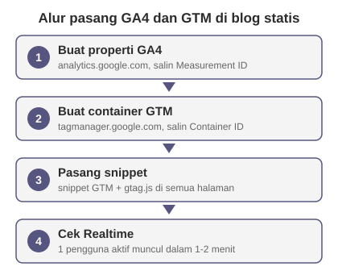
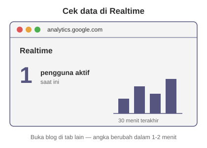

Cara Pasang Google Analytics 4 dan Tag Manager di Blog Statis
Home > Tutorial > Cara Pasang Google Analytics 4 dan Tag Manager di Blog Statis
Arsip
- Instal Apache MySQL PHP phpMyAdmin di Archlinux 2021
- Konfigurasi Virtual Host Apache Server Di ArchLinux 12 Jun 2021
- Cara Deploy Blog Statis ke GitHub Pages 17 Nov 2026
- Cara Daftar make.fun dengan Agent 17 Nov 2026
- Cara Berburu Bug Bounty dengan Agentic-Bug-Hunter 18 Nov 2026
- Cara Pasang Google Analytics 4 dan Tag Manager di Blog Statis 26 Nov 2026
- Cara Optimasi SEO Blog GitHub Pages 26 Nov 2026
- Cara Ikut Bounty make.fun Pakai AI Agent 26 Nov 2026
- Cara Bikin Bot Tank di battle.training 26 Nov 2026
- Cara Bikin USB Bootable Ventoy 26 Nov 2026
Google Analytics 4 (GA4) adalah alat gratis dari Google untuk melihat pengunjung blog kamu: berapa orang yang datang, dari mana mereka berasal, dan halaman apa yang mereka baca. Google Tag Manager (GTM) adalah alat gratis untuk memasang kode pelacak seperti GA4 tanpa harus mengedit file blog setiap kali. Tutorial ini memasang keduanya di blog statis — cukup sekali pasang, data langsung mengalir.

Gambar 1: Alur pasang GA4 dan GTM di blog statis — dari buat properti sampai data muncul di Realtime.
Yang Dibutuhkan
- Akun Google (gratis).
- Blog statis yang sudah online, misalnya di GitHub Pages.
- Akses untuk mengedit file HTML blog kamu.
- Browser.
Langkah 1: Buat Properti Google Analytics 4
Buka analytics.google.com dan login dengan akun Google kamu. Klik Admin di kiri bawah, lalu pilih Create → Property. Isi nama properti (misalnya nama blog kamu), pilih zona waktu Asia/Jakarta dan mata uang IDR, lalu lanjutkan. Pilih platform Web, isi URL blog kamu (misalnya
https://username.github.io) dan nama stream, lalu klik Create stream. Setelah itu kamu akan melihat Measurement ID — kodenya berbentuk G-XXXXXXXXXX. Salin dan simpan dulu.
Tips: Measurement ID di blog ini adalah
G-E8PLTTEFKX — tapi itu ID blog ini. Kamu harus pakai ID dari properti kamu sendiri, jangan salin ID contoh ini.
Langkah 2: Buat Container Google Tag Manager
Buka tagmanager.google.com dan login dengan akun Google yang sama. Klik Create Account, isi nama akun dan nama container (misalnya nama blog kamu), pilih Target Platform Web, lalu klik Create. Setelah container dibuat, kamu akan melihat Container ID — kodenya berbentuk
GTM-XXXXXXX. Salin dan simpan.
Tips: Container ID di blog ini adalah
GTM-TKZ69BJN — sama seperti Measurement ID, itu contoh dari blog ini. Pakai Container ID dari container kamu sendiri.
Langkah 3: Pasang Snippet di Semua Halaman
Ada dua snippet yang harus dipasang di setiap halaman HTML blog kamu. Pertama, snippet GTM — tempel tepat setelah tag
<head>:
<!-- Google Tag Manager -->
<script>(function(w,d,s,l,i){w[l]=w[l]||[];w[l].push({'gtm.start':
new Date().getTime(),event:'gtm.js'});var f=d.getElementsByTagName(s)[0],
j=d.createElement(s),dl=l!='dataLayer'?'&l='+l:'';j.async=true;j.src=
'https://www.googletagmanager.com/gtm.js?id='+i+dl;f.parentNode.insertBefore(j,f);
})(window,document,'script','dataLayer','GTM-TKZ69BJN');</script>
<!-- End Google Tag Manager -->
<script>(function(w,d,s,l,i){w[l]=w[l]||[];w[l].push({'gtm.start':
new Date().getTime(),event:'gtm.js'});var f=d.getElementsByTagName(s)[0],
j=d.createElement(s),dl=l!='dataLayer'?'&l='+l:'';j.async=true;j.src=
'https://www.googletagmanager.com/gtm.js?id='+i+dl;f.parentNode.insertBefore(j,f);
})(window,document,'script','dataLayer','GTM-TKZ69BJN');</script>
<!-- End Google Tag Manager -->
Kedua, snippet noscript GTM — tempel tepat setelah tag
<body>:
<!-- Google Tag Manager (noscript) -->
<noscript><iframe src="https://www.googletagmanager.com/ns.html?id=GTM-TKZ69BJN"
height="0" width="0" style="display:none;visibility:hidden"></iframe></noscript>
<!-- End Google Tag Manager (noscript) -->
<noscript><iframe src="https://www.googletagmanager.com/ns.html?id=GTM-TKZ69BJN"
height="0" width="0" style="display:none;visibility:hidden"></iframe></noscript>
<!-- End Google Tag Manager (noscript) -->
Ketiga, snippet gtag.js untuk GA4 — tempel juga di dalam
<head>, di bawah snippet GTM:
<!-- Google tag (gtag.js) -->
<script async src="https://www.googletagmanager.com/gtag/js?id=G-E8PLTTEFKX"></script>
<script>
window.dataLayer = window.dataLayer || [];
function gtag(){dataLayer.push(arguments);}
gtag('js', new Date());
gtag('config', 'G-E8PLTTEFKX');
</script>
<script async src="https://www.googletagmanager.com/gtag/js?id=G-E8PLTTEFKX"></script>
<script>
window.dataLayer = window.dataLayer || [];
function gtag(){dataLayer.push(arguments);}
gtag('js', new Date());
gtag('config', 'G-E8PLTTEFKX');
</script>
Tips: Ganti
G-E8PLTTEFKX dengan Measurement ID kamu sendiri, dan GTM-TKZ69BJN dengan Container ID kamu sendiri. Kalau blog kamu punya banyak halaman, snippet harus ada di semua halaman — halaman yang tidak dipasangi snippet tidak akan tercatat pengunjungnya.
Langkah 4: Cek Data di Realtime
Simpan dan upload semua file HTML yang sudah diubah, lalu tunggu 1-2 menit sampai blog kamu ter-update. Buka analytics.google.com, masuk ke properti kamu, lalu pilih Reports → Realtime. Buka blog kamu di tab browser lain — dalam 1-2 menit, angka pengguna aktif di Realtime akan berubah menjadi 1. Itu tandanya GA4 sudah mencatat kunjungan.

Gambar 2: Cek data di Realtime — buka blog di tab lain, angka pengguna aktif berubah dalam 1-2 menit.
Tips: Laporan standar seperti jumlah pengunjung harian dan halaman yang paling sering dibaca baru muncul 24-48 jam setelah pemasangan. Jadi jangan panik kalau laporan biasa masih kosong di hari pertama — cek Realtime dulu.
Perhatian: Jangan pasang tag GA4 di dalam GTM kalau kamu sudah memasang gtag.js langsung seperti di tutorial ini. Dua-duanya mengirim pageview yang sama, jadi satu kunjungan akan kehitung dobel.
Kalau Data Tidak Muncul
- Cek Measurement ID dan Container ID — pastikan keduanya benar dan milik properti/container kamu sendiri, bukan contoh dari tutorial ini.
- Cek snippet ada di semua halaman — buka View Source di browser (Ctrl+U) dan cari
G- dan GTM-.
- Matikan ad blocker saat mengetes — beberapa ad blocker memblokir Google Analytics, jadi data tidak terkirim.
- Tunggu dulu — blog yang baru di-deploy butuh 1-2 menit sampai file barunya tampil, dan Realtime butuh 1-2 menit untuk menampilkan kunjungan.
Referensi
- https://support.google.com/analytics/answer/9304153
- https://support.google.com/tagmanager/answer/6103696
Suka tutorial ini? Dukung penulis biar makin banyak tutorial gratis.
Dukung via Saweria